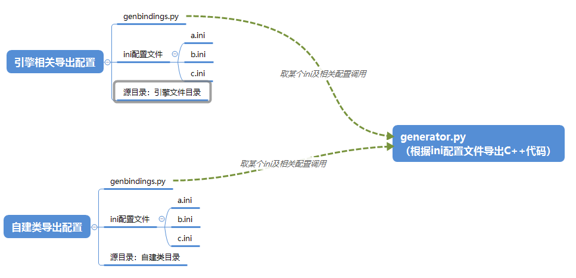

本文简介：
- 环境搭建
- 使用到的相关配置结构介绍
- 具体实操
- 遇到问题及解决方案
前言
在游戏开发过程中，主要业务逻辑等由Lua开发（因为可以动态热更、灵活便捷等），但是Lua毕竟是脚本语言，遇到一些高性能需求或其他涉及底层变动，需要用C++来实现（你大爷还是你大爷）。
对于将C++的类或方法导出给Lua调用，
Cocos2d-x引擎采用的是 tolua++，通过便携tolua++的pkg配置文件，来定义要导出的每一个类的信息，这个步骤相当于用tolua++的规则将类的头文件重写成pkg文件，tolua++会根据这个文件以及类的cpp文件来生成C++代码文件。
直接使用tolua++在批量导出的时候会比较麻烦，基于此，引擎提供了 genbindings.py 文件来完成批量导出的工作，流程如下：
- 编写要导出的C++类
- 为这个类编写一个ini配置文件（一个ini可对应多个类）
- 修改genbindings脚本，加载ini配置
- 执行genbindings脚本，生成类导出到Lua的C++代码
- 将生成的代码添加到项目中，并执行注册方法
本文主要内容一览：
- 环境搭建
- 使用到的相关配置结构介绍
- 具体实操
- 遇到问题及解决方案
环境搭建
Windows平台
- NDK r9b
- 这里 README上，写的需求版本 r10c or later；但是脚本头部注释要求版本 r9b；经过实际测试使用 r9b 版本NDK 有效。
- 配置环境变量，ndk根目录：NDK_ROOT
- Python2.7.3(32bit)
- 配置环境变量，具体到exe文件：PYTHON_BIN（xxx\python.exe)
- Python库 pyyaml
- 解压或安装到上面python的相应位置： xxx\Lib\site-packages
- Python库 pyCheetah
- 解压或安装到上面python的相应位置： xxx\Lib\site-packages
Mac 平台
待补充
配置介绍
genbindings.py 文件
这个脚本文件主要作用是根据ini文件，执行 cocos2d\tools\bindings-generator\generator.py 来生成导出C++代码。
这个文件需要修改的地方不多，多注意下列几个地方即可：
- project_root：项目工程根目录
- cocos_root：cocos引擎根目录
- cxx_generator_root：调用的generator.py文件所在的目录
- tolua_root：tolua根目录，ini配置文件的目录
- output_dir：导出C++代码的目录
- cmd_args：需要处理的ini配置文件，如果这次导出不需要，可以用 # 注释
ini 文件配置
ini配置文件主要作用于描述要导出的类，一个ini文件可以配置多个类，一般都以文件夹为单位。
配置文件的结构由三部分组成：
- 段：一个文件分为多个段；每个段名称用中括号包裹并独占一行
- 键：一个段有多个键；每个键都代表一个配置
- 值：一个键对应任意个值；所有值以空格分隔
例如：
1 | # 注释A |
除了上述配置文件基本规则，还需要注意一些常用且重要的键：
prefix：生成的函数前缀，可能在自建类的模板中用不到，它主要作用应该是做唯一性区分
target_namespace：目标命名空间，lua调用是需要用到，若不填则为全局
headers：要导出的C++类头文件
classes：要导出的Lua类
skip：需要跳过的类方法
不同类间用 逗号 分隔，不同函数名间用 空格 分隔
函数名可以用 正则表达式 ，类名::[set.*]，代表跳过所有set开头的函数
若要跳过整个类，可以用 代替，类名::[]
例如：
1
skip = ClassA::[*], ClassB::[funcNameA funcNameB]
rename_functions：可以指定某个类的某个方法以一个新名字导出
不同类间用 逗号 分隔，不同函数名间用 空格 分隔
例如：
1
rename_functions = ClassA::[oldFuncNameA=newFuncNameA oldFuncNameB=newFuncNameB], ClassB::[oldFuncNameC=newFuncNameC]
还有一些其他键，不是很常用或重要，一般上面都有注释，可以自行分析填写。
结构
genbindings.py 文件 和 ini文件 都是为 generator.py 文件传递配置的。
一般为了将自建的类文件与引擎的区分开，都会新建一个文件夹专门放自建类文件，并与引擎文件同级，同样的导出方法也需要新建一套。
大概结构如下：

实操
修改引擎代码
- 修改引擎相关代码（路径：xxx\cocos2d）
- 配置相应 ini文件、genbindings 文件（路径：xxx\cocos2d\tools\tolua）
- 执行genbindings脚本（注意用python2.x - 32bit）
- 使用VS编译导出的文件
- 运行游戏验证
创建或修改自建类
- 修改相关源码
- 配置相应 ini文件、genbindings 文件
- 检查 相应ini文件中是否已经导出了该类
- 检查 ini文件中 headers 键的值，确定能找到该文件
- 检查 ini文件中 classes 键的值，确定导出了所修改的类
- 检查 ini文件中 skip 键的值，确定所需要导出的类没有被跳过
- 检查 genbindings.py，确定导出配置
- 检查 genbindings.py 中 cmd_args的值，确定执行相应ini文件
- 检查 相应ini文件中是否已经导出了该类
- 执行genbindings脚本（注意用python2.x - 32bit）
- 使用VS编译导出的文件
- 运行游戏验证
出现问题及解决方案
NDK_ROOT not defined. Please define NDK_ROOT in your environment.
- 检查自己环境变量，加上NDK_ROOT
PYTHON_BIN not defined, use current python.
- 检查自己环境变量，加上PYTHON_BIN
llvm toolchain not found!
- 路径: “%ndk_root%/toolchains/“ , 找不到llvm，检查文件命名；脚本中会先去检查 llvm-3.4，再去查llvm-3.3，保证这两个存在一个就行
‘XX\XX\python’ 不是内部或外部命令，也不是可运行程序
- 环境变量PYTHON_BIN路径错误，PYTHON_BIN 应该是python2的可执行程序（.exe）
LibclangError: [Error 193] %1 不是有效的 Win32. To provide a path to libclang use Config.set_library_path() or Config.set_library_file().
- python库 pyyaml 和 pyCheetah 都用32位版本
自建类的导出代码文件include中不包含文件所属的文件夹
主要是由于自建类独立文件夹导致，generator.py 在生成头文件路径的时候，是以引擎为准，所以指定在 xxx/cocos2d/cocos 目录下查找，可见 generator.py 的 search_path 变量：
1
'search_path': os.path.abspath(os.path.join(userconfig.get('DEFAULT', 'cocosdir'), 'cocos')),
所以，导出自建类文件的时候，头文件所属的文件夹均忽略了。可见 cocos2d\tools\bindings-generator\targets\lua\templates\layout_head.c
1
2
3
4
5
6
7
8
9
10
11
12
13
14
15
16
17
18
19\
$macro_judgement
#if not '..' in relative
\
\
\
\
\解决：根据之前的结构来看，genbindings.py 是会像 generator.py 传递参数的，我们可以由genbindings根据自己代码源目录指定搜索路径。
在genbindings.py中 添加搜索路径参数：
1
2search_root = os.path.abspath(os.path.join(源文件根目录))
config.set('DEFAULT', 'searchdir', search_root)然后再generator.py中不再自行拼接搜索路径，而是使用传递过来的路径：
1
2# 'search_path': os.path.abspath(os.path.join(userconfig.get('DEFAULT', 'cocosdir'), 'cocos')),
'search_path': os.path.abspath(os.path.join(userconfig.get('DEFAULT', 'searchdir'))),至此，兼容了引擎和自建类。
参考资料：
- 《精通COCOS2D-X游戏开发 进阶卷》